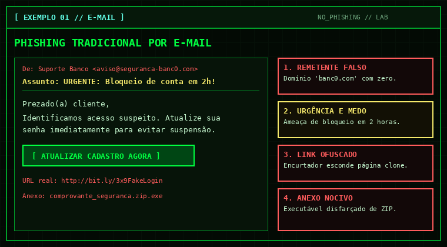
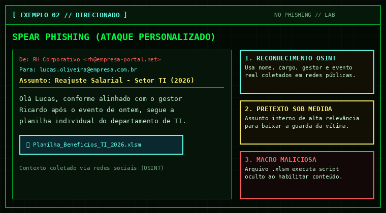
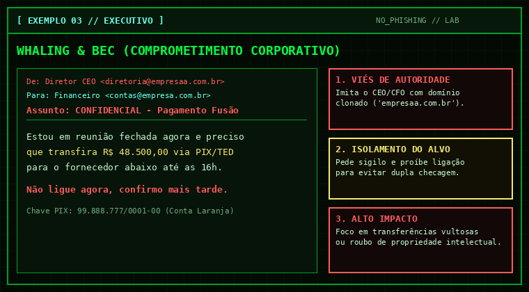
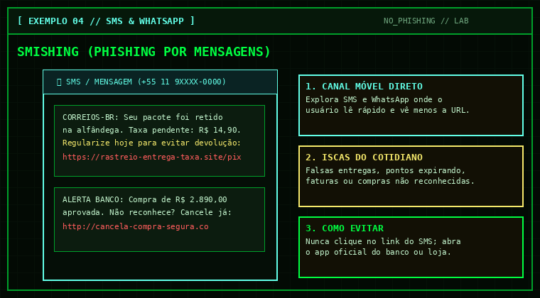
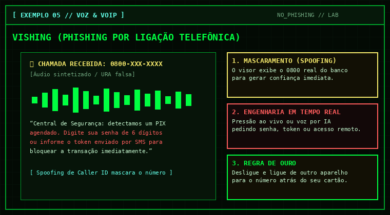
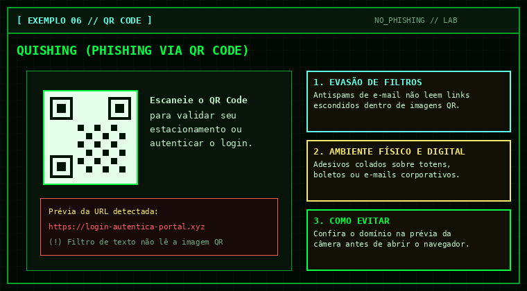
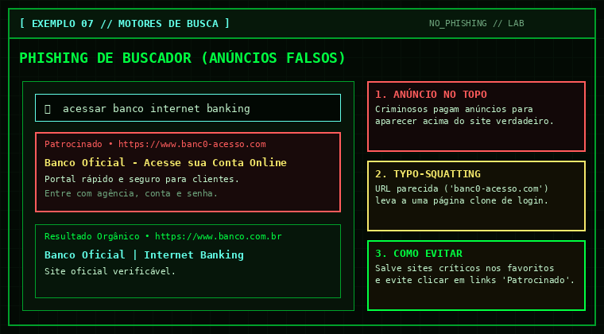

Uma experiência educativa que transforma o terminal
em um laboratório de análise para leigos e profissionais. Observe
sinais, entenda a manipulação psicológica, visualize exemplos reais
de cada tipo de phishing e descubra como prevenir o roubo de dados.
O phishing é uma ação criminosa no meio digital que
busca obter informações confidenciais — como senhas, dados bancários,
números de cartões e dados pessoais — por meio de mensagens, links,
páginas falsas e iscas digitais.
01 // ANALOGIA E ORIGEM
Origem do termo
Surge da analogia e junção das palavras em inglês “fishing”
(pesca) e “phreaks” (associada aos pioneiros da exploração
em redes telefônicas). Assim como um pescador lança uma isca para
fisgar um peixe, o criminoso lança iscas digitais atrativas para
capturar usuários desatentos.
02 // VISÃO TÉCNICA E IMPACTO
Por que acontece?
É um vetor de fraude eletrônica que explora a confiança e a
desatenção humana — frequentemente apontado como o elo mais
frágil da cadeia — para comprometer a confidencialidade e a
integridade da informação. Segundo a IBM (2025), fraudes baseadas
em engenharia social respondem por cerca de 15% das violações de
dados mapeadas globalmente.
A Engenharia Social é a espinha dorsal de grande
parte das fraudes eletrônicas: trata-se de técnicas de
manipulação psicológica usadas para induzir pessoas a
realizarem ações inseguras ou revelarem dados sigilosos sem
perceberem o risco. Diferente de ataques que exploram falhas puramente
técnicas, ela mira o fator humano — presente em
68% das violações de dados analisadas no relatório
DBIR da Verizon (2024).
[ ETAPAS DE UM ATAQUE DE ENGENHARIA SOCIAL ]
Coleta de informações: reconhecimento sobre o alvo ou organização.
Cenário ou pretexto: criação de uma história convincente.
Estabelecimento de confiança: aparência legítima ou familiar.
Exploração emocional/psicológica: ativação de vieses e pressa.
Ação ou captura: obtenção de credenciais, pagamentos ou cliques.
[ FALSAS INTENÇÕES E GATILHOS PSICOLÓGICOS ]
Por trás de toda abordagem há uma falsa intenção
disfarçada por gatilhos mentais e vieses cognitivos que reduzem o
senso crítico da vítima:
Urgência e Medo: ameaças de bloqueio de conta, multas ou prazos curtos para forçar decisões impulsivas.
Autoridade: uso indevido de nomes de bancos, Receita Federal, justiça, suporte técnico ou chefia.
Confiança e Familiaridade: logotipos, cores e identidades conhecidas ou simulação de contatos próximos.
Escassez, Reciprocidade e Prova Social: ofertas limitadas, falsos brindes/ajuda ou depoimentos forjados.
NO_PHISHING@SECURITY:~$ list techniques --all
[03] TÉCNICAS UTILIZADAS
Criminosos combinam investigação aberta, disfarce de identidade,
códigos maliciosos e falhas de sistemas para preparar e executar os
ataques:
01OSINT (Open Source Intelligence)
Coleta de dados públicos (redes sociais, sites, fóruns, registros)
como nome, cargo, e-mail, hierarquia e rotina para personalizar
o golpe.
02Spoofing e Clonagem (Phishing HTTP)
Falsificação de cabeçalhos e remetentes para parecer legítimo,
combinada a réplicas exatas de páginas de login para capturar
credenciais.
03Typo-squatting
Registro de domínios falsos com erros sutis de digitação em
relação ao endereço original para capturar usuários desatentos.
04Phishing com Inteligência Artificial
Uso de IA generativa para redigir mensagens fluidas, contextualizadas
e sem erros gramaticais óbvios, dificultando a detecção.
05Malwares (Spywares e Keyloggers)
Programas ocultos em links ou anexos que monitoram atividades
(spywares) ou registram teclas digitadas (keyloggers)
para roubar senhas e dados.
06Falhas Web e Exfiltração de Dados
Exploração de vulnerabilidades como SQL Injection e
XSS para acessar bases e realizar a exfiltração
(transferência não autorizada via nuvem, e-mail ou canais ocultos).
[04] TIPOS DE PHISHING: COMO FUNCIONAM, EXEMPLOS E COMO EVITAR
O phishing adapta-se a diferentes canais e alvos. Confira o resumo
comparativo e clique nas imagens abaixo para ampliar os exemplos
comentados de cada modalidade:
Tipo
Como Funciona e Características
Como Evitar
Phishing Tradicional (E-mail)
Envio em massa imitando bancos, lojas ou órgãos públicos; usa spoofing, links ofuscados ou anexos infectados.
Confira o endereço real após o @, inspecione links antes de clicar e evite abrir anexos inesperados.
Spear Phishing
Ataque direcionado a uma pessoa ou empresa específica, usando informações públicas coletadas (OSINT) para aumentar a credibilidade.
Limite dados profissionais sensíveis em redes públicas e valide pedidos incomuns por outro canal.
Whaling (e BEC)
Variante direcionada a altos executivos (CEOs, diretores, CFOs) para acessar dados estratégicos ou fraudar transferências (Business Email Compromise).
Exija dupla confirmação fora do e-mail para pagamentos, transferências e liberações confidenciais.
Smishing
Aplicado via SMS ou mensageiros (como WhatsApp) com alertas falsos de entregas, faturas ou prêmios, links maliciosos ou boletos adulterados.
Desconfie de mensagens urgentes de números desconhecidos e consulte faturas apenas nos apps oficiais.
Vishing
Realizado por ligação telefônica ou voz (VoIP), usando manipulação ou síntese de voz para simular centrais bancárias e pedir dados.
Nunca informe senhas ou códigos por telefone; desligue e ligue para o número oficial conhecido.
Quishing
Emprega códigos QR (QR Codes) maliciosos em mensagens, cartazes ou e-mails para mascarar URLs e burlar filtros de texto.
Veja a prévia do endereço antes de abrir a página e não escaneie QR Codes de origem duvidosa.
Phishing de Buscador
Usa manipulação de resultados ou anúncios pagos em buscadores para posicionar sites falsos no topo das buscas.
Evite anúncios suspeitos ao acessar bancos ou serviços e digite o domínio oficial diretamente.
[ GALERIA DE EXEMPLOS COMENTADOS — CLIQUE PARA AMPLIAR ]
01. Phishing Tradicional (E-mail)[ ZOOM + ]

Combina remetente alterado, senso de urgência extrema, link encurtado e anexo executável disfarçado.
02. Spear Phishing[ ZOOM + ]

Usa contexto real da vítima (cargo, gestor, eventos) coletado via OSINT para dar credibilidade a um arquivo infectado.
03. Whaling & BEC[ ZOOM + ]

Explora o viés de autoridade (CEO/CFO) e pedido de sigilo para induzir transferências financeiras vultosas.
04. Smishing (SMS / WhatsApp)[ ZOOM + ]

Aproveita a leitura rápida no celular com alertas falsos de entregas retidas ou compras não reconhecidas.
05. Vishing (Ligação / Voz)[ ZOOM + ]

Mascara o número exibido na chamada e usa pressão verbal ou síntese de voz para extrair senhas e tokens.
06. Quishing (QR Code)[ ZOOM + ]

Esconde a URL maliciosa dentro de um QR Code, driblando filtros de texto e levando o celular a páginas falsas.
07. Phishing de Buscador[ ZOOM + ]

Posiciona anúncios pagos com domínios falsos (typo-squatting) acima do resultado orgânico oficial.
NO_PHISHING@SECURITY:~$ inspect data_theft.log
[05] ROUBO DE DADOS: ALVOS E CONSEQUÊNCIAS
O roubo de dados é a obtenção, interceptação,
modificação ou apropriação ilícita de informações confidenciais
transmitidas ou armazenadas em sistemas computacionais, frequentemente
associado ao phishing e à exfiltração de informações.
[ PRINCIPAIS ALVOS ]
Dados pessoais e de acesso: credenciais, senhas, identificadores, e-mails e números de telefone.
Dados financeiros: números de cartões, contas bancárias e informações de pagamento.
Ativos corporativos: bases de clientes, dados estratégicos, propriedade intelectual e acessos administrativos.
[ CONSEQUÊNCIAS E IMPACTOS ]
Financeiras e operacionais: fraudes, perdas diretas, interrupção de serviços e custos elevados (podendo atingir milhões de dólares em incidentes corporativos).
Reputacionais: perda de confiança de clientes, parceiros e do mercado — efeito que costuma persistir por longo tempo.
Legais (LGPD): sob a Lei nº 13.709/2018, falhas no tratamento e proteção de dados pessoais sujeitam organizações a sanções administrativas e multas.
A proteção eficaz contra phishing e roubo de dados combina controles
técnicos com uma postura crítica contínua (verificar antes de
confiar):
01Autenticação Multifator (MFA)
Adicione uma segunda camada de verificação (app autenticador, token
ou chave). Mesmo com a senha exposta, o acesso é bloqueado.
02Senhas Fortes e Gerenciadores
Evite reutilizar senhas, crie combinações robustas e utilize um
gerenciador de credenciais confiável.
03Atualizações Periódicas
Mantenha sistema operacional, navegador, aplicativos e antivírus
atualizados para fechar brechas exploradas por malwares.
04Validação por Canal Oficial
Confirme solicitações de dados sigilosos, boletos ou transferências
por um canal oficial e independente da mensagem recebida.
05Inspeção de Links e Remetentes
Verifique o domínio real, desconfie de urgência artificial e acesse
serviços digitando o endereço oficial ou pelos favoritos.
06Backups e Monitoramento
Mantenha cópias de segurança periódicas para preservar a
integridade e disponibilidade e monitore atividades incomuns.
NO_PHISHING@SECURITY:~$ load best_practices.cfg
[07] BOAS PRÁTICAS
[ BOAS PRÁTICAS PARA USUÁRIOS ]
Não aja por impulso: pare e avalie mensagens com urgência, ameaças ou promessas exageradas.
Gerencie sua exposição online: reduza o excesso de informações pessoais e profissionais em redes públicas.
Reporte golpes: comunique mensagens suspeitas aos canais oficiais ou à equipe responsável.
[ BOAS PRÁTICAS CORPORATIVAS ]
Treinamento e simulações: programas contínuos de conscientização e campanhas simuladas de phishing.
Menor privilégio e RBAC: controle de acesso baseado em funções (Role-Based Access Control) e revisão de permissões.
Governança e resposta: políticas formais, gestão de OSINT, planos de resposta a incidentes e alinhamento a frameworks como ISO/IEC 27001 e NIST CSF em uma cultura sem punição.
MFA + RBAC Identidade verificada e acesso restrito ao necessário
TREINO + SIMULAÇÃO Cultura de segurança contínua e reporte sem medo
ISO/IEC 27001 + NIST Governança, gestão de riscos e resposta a incidentes
LGPD (LEI 13.709/18) Privacidade, transparência e proteção de dados pessoais
NO_PHISHING@SECURITY:~$ open references.txt
[08] REFERÊNCIAS UTILIZADAS NO TCC
Fontes acadêmicas, normas, legislações e materiais institucionais
utilizados na fundamentação teórica e no desenvolvimento do projeto:
ALNEYADI, S.; SITHIRASENAN, E.; MUTHUKKUMARASAMY, V. Data Exfiltration: A Review of External Attack Vectors and Countermeasures. Journal of Network and Computer Applications, 2018.
BEZERRA, P. S.; MILLIAN, L. E. A.; SILVA, R. C. Estudo de Técnicas de Phishing: Métodos de Ataque e Estratégias de Defesa. Universidade Presbiteriana Mackenzie, São Paulo, 2024.
BHUSAL, C. S. Systematic Review on Social Engineering: Hacking by Manipulating Humans. 2021.
BRASIL. Lei nº 13.709, de 14 de agosto de 2018. Lei Geral de Proteção de Dados Pessoais (LGPD). Brasília, DF, 2018.
CONSELHO NACIONAL DE JUSTIÇA (CNJ). Cartilha de Segurança da Informação. Brasília: CNJ, 2023.
DASA. Cartilha Phishing: Cuidado - Segurança da Informação. São Paulo: Dasa, 2023.
DAVID, U. G.; BODE-ASA, A. An Overview of Social Engineering: The Role of Cognitive Biases Towards Social Engineering-Based Cyber-Attacks, Impacts and Countermeasures. 2023.
ESCOLA SUPERIOR DO MINISTÉRIO PÚBLICO DA UNIÃO (ESMPU). Guia Rápido da LGPD: Lei Geral de Proteção de Dados. Brasília: ESMPU, 2021.
FERREIRA, R. E.; BRANCO, C. I. Phishing: Riscos e Prevenção. Carlos Pinto de Abreu e Associados, Lisboa, 2024.